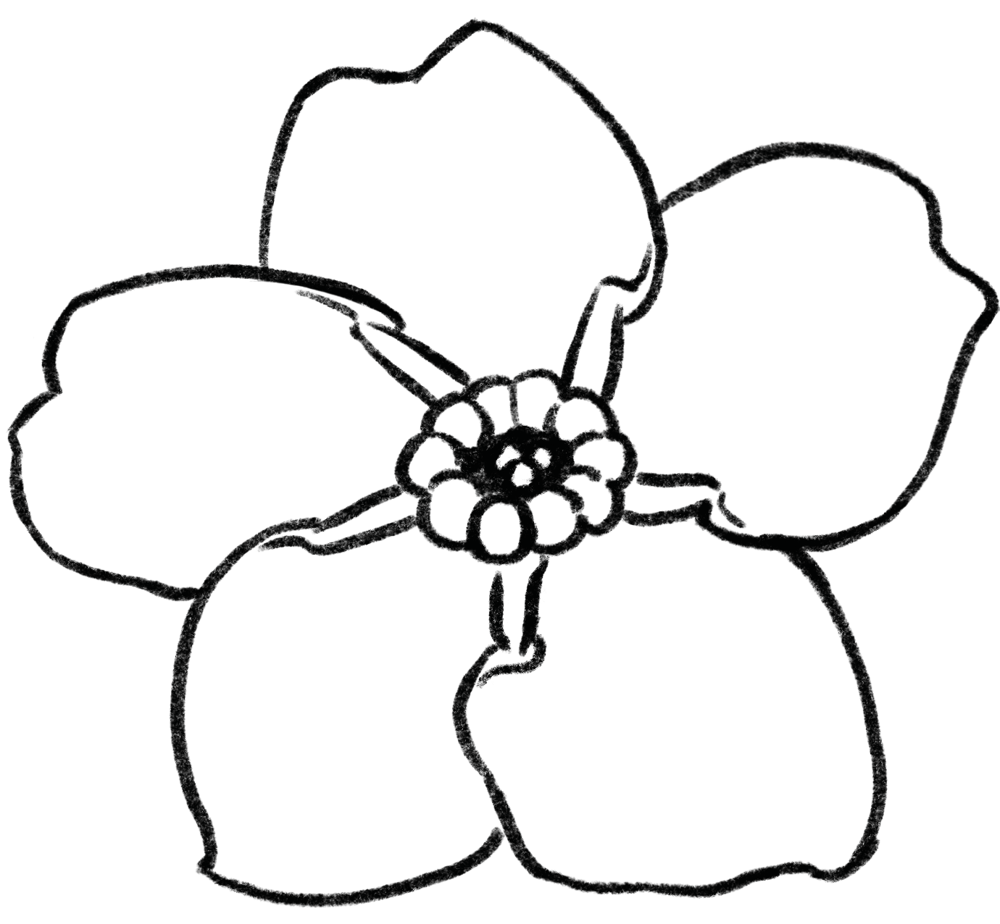

Overview
Angiosperms are seed plants that do flower. Hence the name, "flowering seed" with "angio" meaning flower and "sperm" meaning "seed" in Greek. There are generally categorized into two main groups: monocotyledons and dicotyledons. Or monocots and dicots for short.
Examples
Kiwi
Forget-me-not
Angiosperm Wood
Also known as "hardwood," angiosperms are known to have more heterogeneous or complex tissues compared to their naked cousins. As such, they can have incredibly diverse structures.
Some angiosperms have tracheids in addition to vessel elements. Even trees have a hard time letting go of their roots... Excuse the pun.
Tension Wood
It was a dark and stormy night.
And the angiosperm tree must stay upright.
To stay upright, it used a strategy.
Tension wood, it's called
But the gymnosperm tree
Is appalled
"What are you doing?" It cried.
"Well," said the angiosperm tree,
"I'm trying to stay upright.
Using tension wood to get through the night."
"But wood shouldn't be gelatinous!"
"Well, I am in this crisis."
And stayed upright it did
The angiosperm tree.
Ignoring the corny poem, tension wood does have gelatinous fibers to keep the tree upright. These fibers pull the tree up rather through the tension of these fibers. Because of this, angiosperms have dense rings opposite to where the tree bends. Take a nice look at the diagram below. It should help.
Fun facts About Tension Wood
- Its gelatinous fibers are a result of intrusive growth
- The gelatinous layer is located in the secondary cell wall